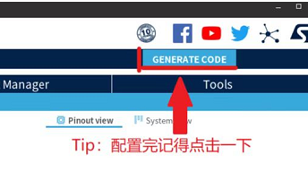
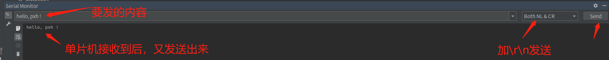
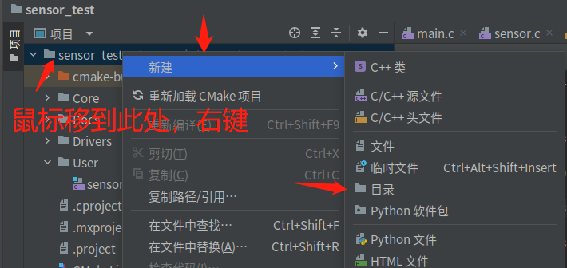
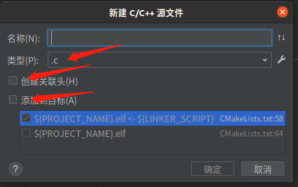

外设与传感器#
常见的STM32外设有 GPIO、TIM、USART、ADC、DAC、SPI、I2C、EXIT、RTC、SysTIck、WDG、DMA、FLASH、FSMC 等。
B-L475E-IOT01A 上板载许多传感器，包括但不限于以下传感器（更具体描述的请参考 ST 官方文档 :clap:）：
用于相对湿度和温度测量的电容式数字传感器（HTS221）
高性能3轴磁力计（LIS3MDL）
3D加速度计和3D陀螺仪（LSM6DSL）
260-1260 hPa绝对数字输出气压计（LPS22HB）
在上一章节，我们使用 STM32 的 GPIO 点亮了 LED 灯，在后续章节，我们会利用 STM32 的串口来与 LoRa 节点通信。因此，本章节我们将学习如何使用 STM32 的 UART（USART 与 UART的区别请自行了解）与 I2C 外设，以及如何获取以 I2C 为通信方式的传感器数据。
实验目的#
实现 UART 阻塞式发送数据以及重定向 printf() 函数
实现 UART 中断式接收数据
实现 I2C 接收传感器数据
准备工作#
CLion 中安装 Serial Port Monitor 插件
硬件#
物联网实验箱
USB 数据线
软件#
CLion
STM32CubeMX
相关电路原理#
STM32 与 USB STLINK 接口

:exclamation: 注意
开发板上一共有两片 STM32，其中一片是 STM32F103，另一片是 STM32L475，其中 STM32F103 里烧录了 stlink 固件，是作为仿真器来使用的。那这个时候好（hào）事儿的同学就会有疑问了，你这原理图上 STM32L4 的串口1怎么是 PB6 和 PB7 ，STM32 的串口1不是 PA9 和 PA10 吗？:thinking:其实是因为如果以开发板为模板生成工程的话，在默认的配置里，是把 PB6 和 PB7 重映射为串口1的，而 PA9，PA10 默认配置为 OTG 功能，打开 .ioc 文件就可以发现。

STM32 与 I2C 传感器接口
结合两张图可以看出，这四个传感器都与 STM32 的 I2C2 相连，即STM32 的 PB10 和 PB11。除此之外，每一个传感器的 INT 或 DRDY 引脚连接到 STM32 的 GPIO 上（有关 I2C 的主从模式、中断和非中断模式请自行了解）。
引脚定义与相关API#
UART实验引脚定义与相关API#
引脚定义
PB6 配置为 TX 引脚，PB7 配置为 RX 引脚
相关API
/**
* @brief Receive an amount of data in interrupt mode.
* @note When UART parity is not enabled (PCE = 0), and Word Length is configured to 9 bits (M1-M0 = 01),
* the received data is handled as a set of u16. In this case, Size must indicate the number
* of u16 available through pData.
* @param huart UART handle.
* @param pData Pointer to data buffer (u8 or u16 data elements).
* @param Size Amount of data elements (u8 or u16) to be received.
* @retval HAL status
*/
HAL_StatusTypeDef HAL_UART_Receive_IT(UART_HandleTypeDef *huart, uint8_t *pData, uint16_t Size)
/**
* @brief Send an amount of data in blocking mode.
* @note When UART parity is not enabled (PCE = 0), and Word Length is configured to 9 bits (M1-M0 = 01),
* the sent data is handled as a set of u16. In this case, Size must indicate the number
* of u16 provided through pData.
* @note When FIFO mode is enabled, writing a data in the TDR register adds one
* data to the TXFIFO. Write operations to the TDR register are performed
* when TXFNF flag is set. From hardware perspective, TXFNF flag and
* TXE are mapped on the same bit-field.
* @param huart UART handle.
* @param pData Pointer to data buffer (u8 or u16 data elements).
* @param Size Amount of data elements (u8 or u16) to be sent.
* @param Timeout Timeout duration.
* @retval HAL status
*/
HAL_StatusTypeDef HAL_UART_Transmit(UART_HandleTypeDef *huart, const uint8_t *pData, uint16_t Size, uint32_t Timeout)
/**
* @brief This function provides minimum delay (in milliseconds) based
* on variable incremented.
* @note In the default implementation , SysTick timer is the source of time base.
* It is used to generate interrupts at regular time intervals where uwTick
* is incremented.
* @note This function is declared as __weak to be overwritten in case of other
* implementations in user file.
* @param Delay specifies the delay time length, in milliseconds.
* @retval None
*/
__weak void HAL_Delay(uint32_t Delay)
/**
* @brief Return the UART handle state.
* @param huart Pointer to a UART_HandleTypeDef structure that contains
* the configuration information for the specified UART.
* @retval HAL state
*/
HAL_UART_StateTypeDef HAL_UART_GetState(const UART_HandleTypeDef *huart)
/**
* @brief Rx Transfer completed callback.
* @param huart UART handle.
* @retval None
*/
__weak void HAL_UART_RxCpltCallback(UART_HandleTypeDef *huart)
{
/* Prevent unused argument(s) compilation warning */
UNUSED(huart);
/* NOTE : This function should not be modified, when the callback is needed,
the HAL_UART_RxCpltCallback can be implemented in the user file.
*/
}
I2C实验引脚定义与相关API#
引脚定义
PB10 配置为 SCL引脚，PB11 配置为 SDA引脚
相关API
/**
* @功能 串口显示 LPS22HB pressure sensor 的值
*/
void Pressure_Test(void)
/**
* @功能 串口显示 HTS221 humidity sensor 的值
*/
void Humidity_Test(void)
/**
* @功能 串口显示 HTS221 temperature sensor 的值
*/
void Temperature_Test(void)
/**
* @功能 串口显示 LSM6DSL accelerometer sensor 的值
*/
void Accelero_Test(void)
/**
* @功能 串口显示 LIS3MDL gyroscope sensor 的值
*/
void Gyro_Test(void)
/**
* @功能 串口显示 LIS3MDL magnetometer sensor 的值
*/
void Magneto_Test(void)
实验步骤#
UART与电脑通信#
STM32CubeMX创建工程#
在 Pinout & Configuration 中使能 USART1 的中断，Mode为 Asynchronous（异步方式，简称UART）

配置完点击 GENERATE CODE 生成工程

代码编写及运行结果#
UART阻塞式发送数据#
在 main.c 中编写以下代码，编写完成后点击右上角的绿色三角形编译并下载程序，串口终端打印出hello world!

HAL_UART_Transmit(&huart1,"hello world!\r\n",14,0xffff);
HAL_Delay(1000); //延时一秒
:exclamation: 注意
Serial Monitor 各个按键和选项的功能请自行了解，由于串口波特率默认配置为115200，因此在这里也需要把 Baudrate 设置为115200，Port name 要选择为对应的端口。

重定向printf()函数#
printf 是指格式化输出函数，主要功能是向标准输出设备按规定格式输出信息。printf 是C语言标准库函数，定义于头文件 <stdio.h>，输出的字符串除了可以是字母、数字、空格和一些数字符号以外，还可以使用一些转义字符表示特殊的含义 。
学习标准库的时候，在 Keil 里面为了使用printf函数我们需要重定向fputc函数：
int fputc (int ch, FILE *f)
{
(void)HAL_UART_Transmit(&huart1, (uint8_t *)&ch, 1, 1000);
return ch;
}
其中的 FILE 定义在 stdio.h 头文件中，所以需要在项目中包含这个头文件，但是经过测试发现，Keil 里面包含的是 MDK\ARM\ARMCC\include 这个目录下的stdio.h，而在 Clion 中是不会链接到这个文件的。因此如果在 CLion 中也按之前的方法进行重定向，会发现 printf 没有任何输出。在 CLion 中链接的是 GNU-Tools-ARM-Embedded\arm-none-eabi\include里面的stdio.h，如果仍然想使用 printf 函数功能，则需要进行如下操作：
在~/Core/Src/usart.c中添加以下代码
/* USER CODE BEGIN 1 */
#ifdef __GNUC__
/* With GCC/RAISONANCE, small printf (option LD Linker->Libraries->Small printf
set to 'Yes') calls __io_putchar() */
#define PUTCHAR_PROTOTYPE int __io_putchar(int ch)
#else
#define PUTCHAR_PROTOTYPE int fputc(int ch, FILE *f)
#endif /* __GNUC__ */
/**
* @brief Retargets the C library printf function to the USART.
* @param None
* @retval None
*/
PUTCHAR_PROTOTYPE
{
/* Place your implementation of fputc here */
/* e.g. write a character to the EVAL_COM1 and Loop until the end of transmission */
HAL_UART_Transmit(&huart1, (uint8_t *)&ch, 1, 0xFFFF);
//HAL_UART_Transmit(&huart2, (uint8_t *)&ch, 1, 0xFFFF); //串口2
return ch;
}
/* USER CODE END 1 */
可以发现，这段代码最终也是调用 HAL_UART_Transmit()，因此这里的 printf() 也是阻塞式发送数据。
在~/Core/Src/main.c中添加头文件
/* USER CODE BEGIN Includes */
#include "stdio.h"
/* USER CODE END Includes */
在~/Core/Src/main.c的 while(1) 循环中添加以下代码
/* USER CODE BEGIN 3 */
printf("hello, pansiwen!(#^.^#)\r\n"); //必须要以\r\n结尾
HAL_Delay(1000);
编译下载程序后，终端打印出字符串，非常方便 :watermelon:！
UART中断式接收数据#
因为中断接收函数 HAL_UART_Receive_IT() 只能触发一次接收中断，所以我们需要在中断回调函数中再调用一次中断接收函数
具体流程：
初始化串口（相关调用代码已经通过 STM32CubeMX 自动生成）
在 main 中第一次调用接收中断函数
进入接收中断，接收完数据 进入中断回调函数
修改 HAL_UART_RxCpltCallback() 中断回调函数，处理接收的数据
回调函数中要调用一次 HAL_UART_Receive_IT() 函数，使得程序可以重新触发接收中断
函数流程图：
HAL_UART_Receive_IT(中断接收函数) :point_right::point_right: USART1_IRQHandler(中断服务函数) :point_right::point_right: HAL_UART_IRQHandler(中断处理函数) :point_right::point_right: UART_Receive_IT(接收函数) :point_right::point_right: HAL_UART_RxCpltCallback(中断回调函数)
HAL_UART_RxCpltCallback() 函数就是用户要重写在main.c里的回调函数。（关于回调函数的定义请自行了解）
main.c 文件中添加需要的 c 库头文件，定义变量
/* Private includes ----------------------------------------------------------*/
/* USER CODE BEGIN Includes */
#include "stdio.h"
#include <string.h>
#define RXBUFFERSIZE 256 //最大接收字节数
char RxBuffer[RXBUFFERSIZE]; //接收数据
uint8_t aRxBuffer; //接收中断缓冲
uint8_t Uart1_Rx_Cnt = 0; //接收缓冲计数
/* USER CODE END Includes */
在 mian.c 文件中的 main() 主函数里的串口初始化后，while() 循环开始前，先调用一次 HAL_UART_Receive_IT() 中断接收函数
/* USER CODE BEGIN 2 */
HAL_UART_Receive_IT(&huart1, (uint8_t *)&aRxBuffer, 1);
/* USER CODE END 2 */
在 main.c 文件下方添加 HAL_UART_RxCpltCallback() 中断回调函数
/* USER CODE BEGIN 4 */
//可接收不定长度的数据，以\r\n为结束位，收到的数据存在RxBuffer中
void HAL_UART_RxCpltCallback(UART_HandleTypeDef *huart)
{
/* Prevent unused argument(s) compilation warning */
UNUSED(huart);
/* NOTE: This function Should not be modified, when the callback is needed,
the HAL_UART_TxCpltCallback could be implemented in the user file
*/
if(Uart1_Rx_Cnt >= 255) //溢出判断
{
Uart1_Rx_Cnt = 0;
memset(RxBuffer,0x00,sizeof(RxBuffer));
HAL_UART_Transmit(&huart1, (uint8_t *)"数据溢出", 10,0xFFFF);
}
else
{
RxBuffer[Uart1_Rx_Cnt++] = aRxBuffer; //接收数据转存
//0x0A 是 \r 的 ASCII码，0x0D 是 \n 的 ASCII码
if((RxBuffer[Uart1_Rx_Cnt-1] == 0x0A)&&(RxBuffer[Uart1_Rx_Cnt-2] == 0x0D)) //判断结束位，以\r\n结尾为一组数据
{
HAL_UART_Transmit(&huart1, (uint8_t *)&RxBuffer, Uart1_Rx_Cnt,0xFFFF); //将收到的信息发送出去
while(HAL_UART_GetState(&huart1) == HAL_UART_STATE_BUSY_TX);//检测UART发送结束
Uart1_Rx_Cnt = 0;
memset(RxBuffer,0x00,sizeof(RxBuffer)); //清空数组
}
}
HAL_UART_Receive_IT(&huart1, (uint8_t *)&aRxBuffer, 1); //再次调用中断接收函数
}
/* USER CODE END 4 */
编译下载程序后，在终端输入想要发送给 STM32 的字符串，点击 Send

:exclamation:注意
要在 CLion的 SerialMonitor 中，右边选择 Both NL & CR，即自动添加回车换行，也可以在要发送的字符串后面添加 \r\n，例如：123\r\n
I2C获取传感器数据#
STM32CubeMX创建工程#
创建过程与:link:UART与电脑通信部分一致
在工程中完成:link:重定向printf()函数部分
:exclamation:注意
在这一步同学们通常会有三种选择，一是直接用上面完成的工程，二是完全新创建一个工程，三是复制一份上面的工程，然后编辑复制后的工程。如果是第三种情况，可能会有编译错误问题，解决方法：
如果移动了工程文件夹或者复制了工程文件夹，最好打开.ioc文件重新 Generate 一下再编译，可以解决很多错误
遇到任何 CMake 相关的报错，一般是由于缓存没有更新引起的，可以在 CLion 中选 工具-CMake-重置缓存并重新加载项目 即可解决:ok_hand:。
代码编写及运行结果#
添加 BSP 源文件
在工程中新建~/sensor_test/Drivers/BSP文件夹，将/home/lmx/STM32Cube/Repository/STM32Cube_FW_L4_V1.17.2/Drivers/BSP中的B-L475E-IOT01和Components文件夹复制到新建的文件夹中。
添加对应头文件和函数
在工程中的 ~Core/Inc/main.h 文件夹中添加用到的头文件和函数
/* Includes ------------------------------------------------------------------*/
#include "stm32l4xx_hal.h"
#include "stm32l475e_iot01.h"
#include "stm32l475e_iot01_accelero.h"
#include "stm32l475e_iot01_magneto.h"
#include "stm32l475e_iot01_gyro.h"
#include "stm32l475e_iot01_tsensor.h"
#include "stm32l475e_iot01_psensor.h"
#include "stm32l475e_iot01_hsensor.h"
#include "stm32l475e_iot01_qspi.h"
#include <stdio.h>
/* Private includes ----------------------------------------------------------*/
/* Exported functions prototypes ---------------------------------------------*/
void QSPI_demo(void);
void QSPI_MemoryMapped_demo(void);
void Temperature_Test(void);
void Humidity_Test(void);
void Pressure_Test(void);
void Gyro_Test(void);
void Magneto_Test(void);
void Accelero_Test(void);
uint32_t Serial_Scanf(uint32_t value);
void Error_Handler(void);
/* USER CODE BEGIN EFP */
修改工程目录下的 CMakeLists.txt 文件
在文件最后增加以下代码，然后 点击重新加载变更
include_directories(
Drivers/BSP/B-L475E-IOT01
Drivers/BSP/Components/Common
// 其他include目录
// 需要哪个外设就包含进去，例如用于相对湿度和温度测量的电容式数字传感器：Drivers/BSP/Components/hts221
)
file(GLOB_RECURSE SOURCES
"Drivers/BSP/B-L475E-IOT01/*.*"
"Drivers/BSP/Components/Common/*.*"
// *.*表示通配符，也就是这个文件夹里的所有文件都会被编译
// 需要哪个外设就包含进去，例如用于相对湿度和温度测量的电容式数字传感器："Drivers/BSP/Components/hts221/*.*"
)
:exclamation: 注意
在 Keil 中，我们需要哪个 .c 或 .h文件，通常是直接添加进工程文件夹中，然后在软件的图形化界面中手动选择即可。在 CLion 是基于 CMake 来管理项目的，组织编译规则都是基于 CMakeLists.txt 文件。如果熟悉 CMake 会觉得很方便很强大，不熟悉的也没事，CLion 会自动生成 CMakeLists.txt 文件，基本不需要额外修改什么，只需要知道怎么在这个文件里面添加源码目录和 include 文件夹的路径就行了（感兴趣的同学可以自行了解 CMake 以及 CMake 与Makefile 的区别和联系:smiley:）。
添加 ~User/sensor.c 文件
在实际开发中，为了方便管理，通常将完全由用户编写的代码独立成一个文件夹，新建~/sensor_test/User 文件夹，在该文件夹中新建 sensor.c 文件。
新建 User 目录

新建 .c 文件
选择 .c 文件，输入名称，取消勾选

sensor.c 文件中输入以下代码
/* Includes ------------------------------------------------------------------*/
#include "main.h"
/* Private typedef -----------------------------------------------------------*/
/* Private define ------------------------------------------------------------*/
/* Private macro -------------------------------------------------------------*/
/* Private variables ---------------------------------------------------------*/
int16_t pDataXYZ[3] = {0};
float pGyroDataXYZ[3] = {0};
/* Private function prototypes -----------------------------------------------*/
/* Private functions ---------------------------------------------------------*/
/**
* @brief Test of LPS22HB pressure sensor.
*/
void Pressure_Test(void)
{
float press_value = 0;
BSP_PSENSOR_Init();
press_value = BSP_PSENSOR_ReadPressure();
printf("PRESSURE is = %.2f mBar \n", press_value);
}
/**
* @brief Test of HTS221 humidity sensor.
*/
void Humidity_Test(void)
{
float humidity_value = 0;
BSP_HSENSOR_Init();
humidity_value = BSP_HSENSOR_ReadHumidity();
printf("HUMIDITY is = %.2f %%\n", humidity_value);
}
/**
* @brief Test of HTS221 and LPS22HB temperature sensors.
*/
void Temperature_Test(void)
{
float temp_value = 0;
BSP_TSENSOR_Init();
#ifdef USE_LPS22HB_TEMP
printf("\n*** Type n or N to get a first Temperature data from LPS22HB sensor ***\n\n");
#else /* USE_HTS221_TEMP */
//printf("\n*** Type n or N to get a first Temperature data from HTS221 sensor ***\n\n");
#endif
//printf("\n*** Type q or Q to quit Temperature Test ***\n\n");
temp_value = BSP_TSENSOR_ReadTemp();
printf("TEMPERATURE is = %.2f \n", temp_value);
}
/**
* @brief Test of LSM6DSL accelerometer sensor.
*/
void Accelero_Test(void)
{
BSP_ACCELERO_Init();
BSP_ACCELERO_AccGetXYZ(pDataXYZ);
printf("ACCELERO_X = %d \n", pDataXYZ[0]);
printf("ACCELERO_Y = %d \n", pDataXYZ[1]);
printf("ACCELERO_Z = %d \n", pDataXYZ[2]);
}
/**
* @brief Test of LIS3MDL gyroscope sensor.
*/
void Gyro_Test(void)
{
BSP_GYRO_Init();
BSP_GYRO_GetXYZ(pGyroDataXYZ);
printf("GYRO_X = %.2f \n", pGyroDataXYZ[0]);
printf("GYRO_Y = %.2f \n", pGyroDataXYZ[1]);
printf("GYRO_Z = %.2f \n", pGyroDataXYZ[2]);
}
/**
* @brief Test of LIS3MDL magnetometer sensor.
*/
void Magneto_Test(void)
{
BSP_MAGNETO_Init();
BSP_MAGNETO_GetXYZ(pDataXYZ);
printf("MAGNETO_X = %d \n", pDataXYZ[0]);
printf("MAGNETO_Y = %d \n", pDataXYZ[1]);
printf("MAGNETO_Z = %d \n", pDataXYZ[2]);
}
修改 CMakeLists.txt 文件
修改 main.c 文件
在while() 循环中添加以下代码
/* USER CODE BEGIN 3 */
printf(".......................\r\n");
Temperature_Test();
Humidity_Test();
Pressure_Test();
Magneto_Test();
Gyro_Test();
Accelero_Test();
HAL_Delay(1000);
编译下载程序后，打开 Serial Monitor 终端

可适当晃动实验箱，让数据明显变化:smirk:。